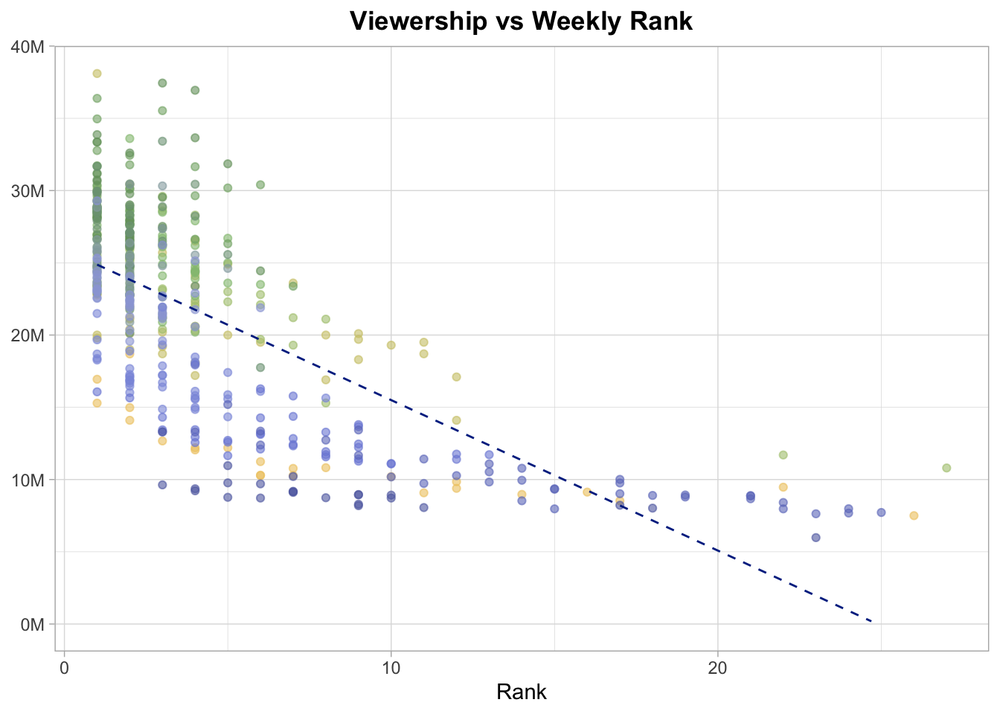
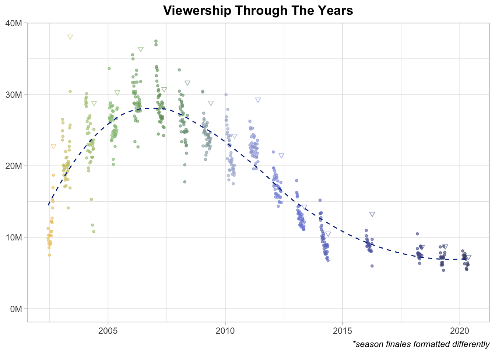
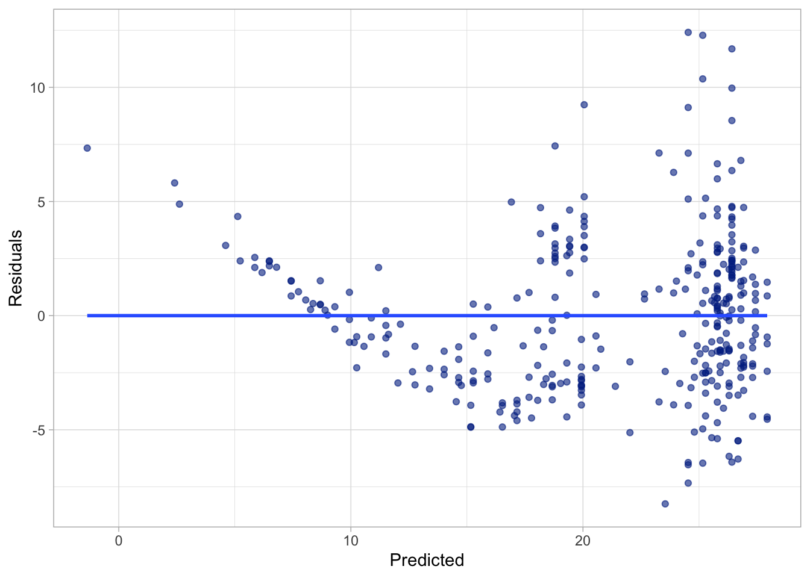
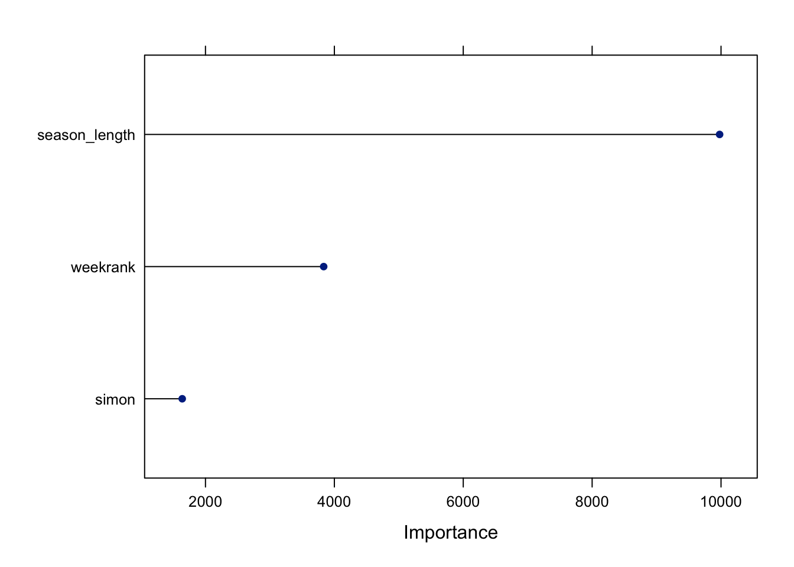
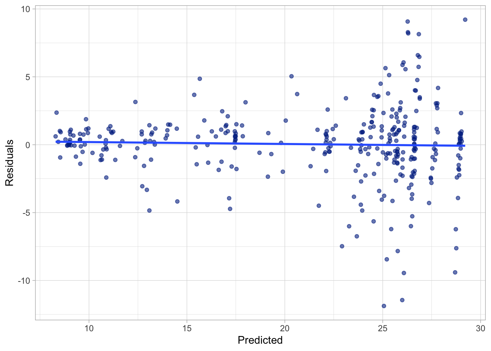
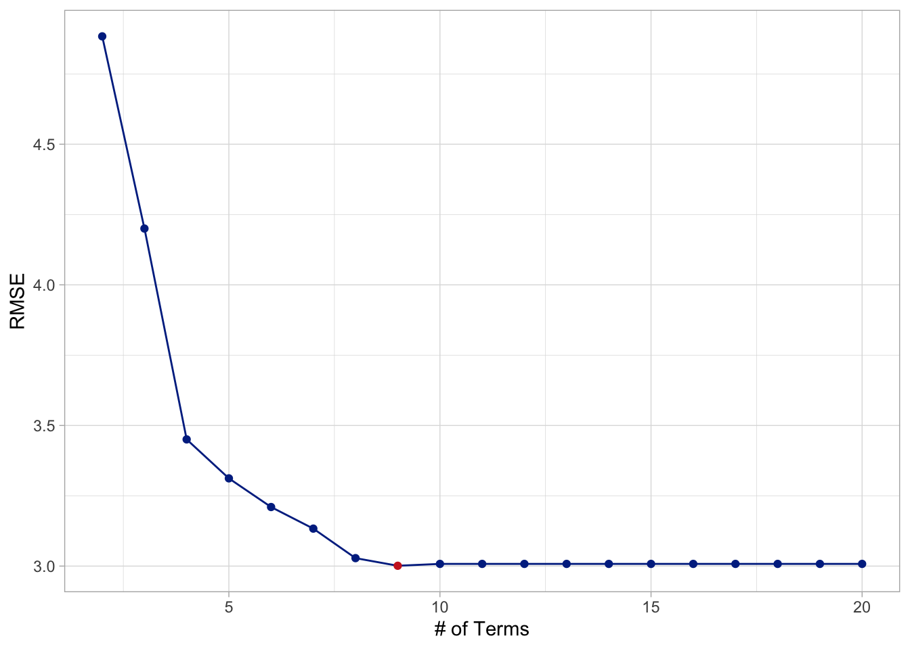
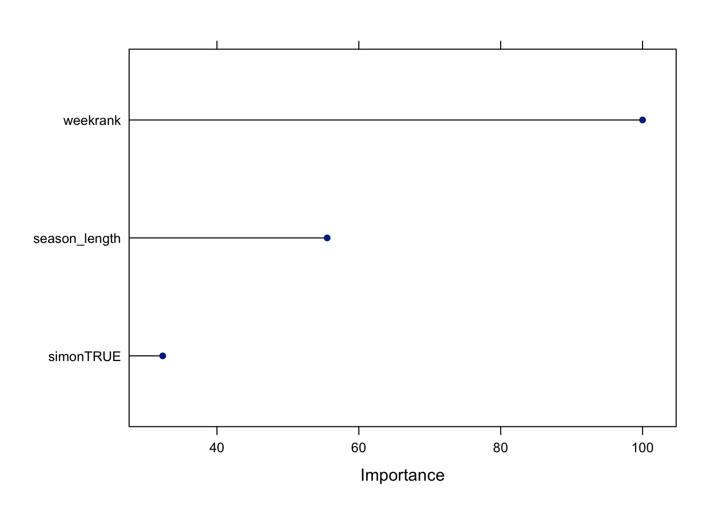
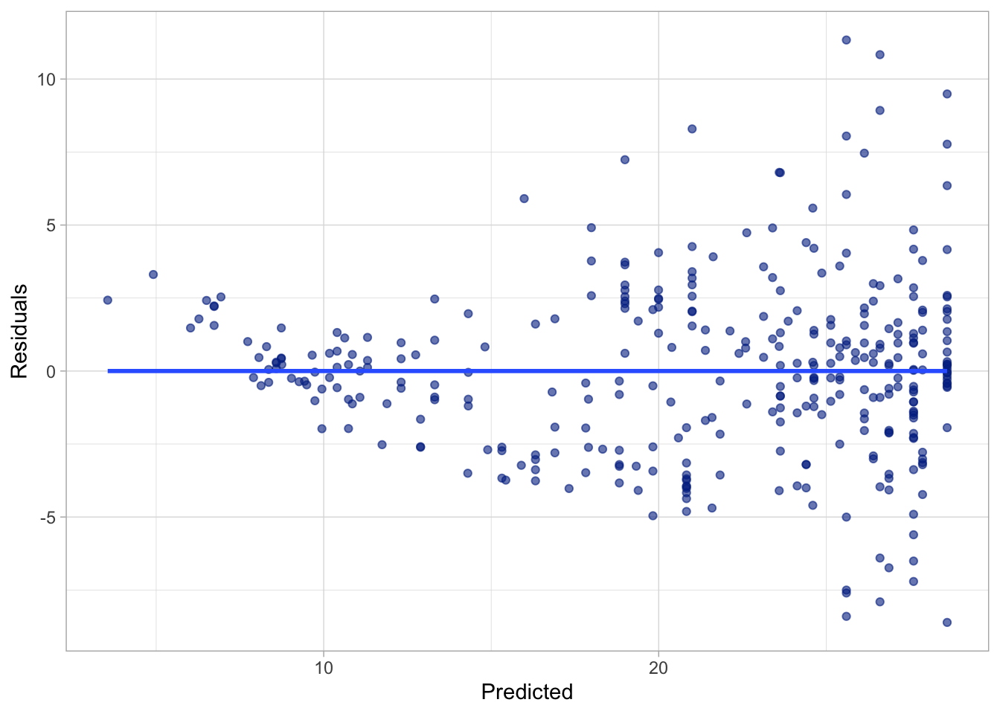

pacman::p_load(tidytuesdayR, # loads tidytuesday data from repo
here, # assists with location
skimr, # for undestanding structure
tidyverse, # for wrangling and visualizing
ggtext, # for enhanced text
showtext, # for enhanced text
MetBrewer, # for pleasing color palettes
wesanderson, # for pleasing color palettes
caret, # for modeling
earth) # for modeling
set.seed(42)Tidy Tuesday Exercise
Loading the Data
# read in the proper week's data
full_data <- tt_load(2024, 30, auth = github_pat())--- Compiling #TidyTuesday Information for 2024-07-23 ------- There are 6 files available ------ Starting Download ---
Downloading file 1 of 6: `auditions.csv`
Downloading file 2 of 6: `eliminations.csv`
Downloading file 3 of 6: `finalists.csv`
Downloading file 4 of 6: `ratings.csv`
Downloading file 5 of 6: `seasons.csv`
Downloading file 6 of 6: `songs.csv`--- Download complete ---# if the above fails a .rds file with the appropriate data
# can be found in the data folder
# full_data <- readRDS(here("tidytuesday-exercise", "data", "tidytuesday.rds"))
full_dataAvailable datasets:
auditions
eliminations
finalists
ratings
seasons
songs
# create distinct dataframes
auditions <- as.data.frame(full_data$auditions)
eliminations <- as.data.frame(full_data$eliminations)
finalists <- as.data.frame(full_data$finalists)
ratings <- as.data.frame(full_data$ratings)
seasons <- as.data.frame(full_data$seasons)
songs <- as.data.frame(full_data$songs)Exploring the Data
Examining the Structure
skim(ratings)| Name | ratings |
| Number of rows | 593 |
| Number of columns | 17 |
| _______________________ | |
| Column type frequency: | |
| character | 12 |
| logical | 1 |
| numeric | 4 |
| ________________________ | |
| Group variables | None |
Variable type: character
| skim_variable | n_missing | complete_rate | min | max | empty | n_unique | whitespace |
|---|---|---|---|---|---|---|---|
| episode | 0 | 1.00 | 6 | 62 | 0 | 313 | 0 |
| airdate | 0 | 1.00 | 5 | 17 | 0 | 590 | 0 |
| 18_49_rating_share | 0 | 1.00 | 1 | 9 | 0 | 373 | 0 |
| timeslot_et | 515 | 0.13 | 16 | 19 | 0 | 8 | 0 |
| dvr_18_49 | 539 | 0.09 | 1 | 3 | 0 | 5 | 0 |
| dvr_viewers_millions | 539 | 0.09 | 1 | 4 | 0 | 45 | 0 |
| total_18_49 | 539 | 0.09 | 1 | 3 | 0 | 16 | 0 |
| total_viewers_millions | 539 | 0.09 | 1 | 5 | 0 | 49 | 0 |
| weekrank | 101 | 0.83 | 1 | 4 | 0 | 28 | 0 |
| share | 449 | 0.24 | 1 | 3 | 0 | 21 | 0 |
| rating_share_households | 515 | 0.13 | 7 | 9 | 0 | 55 | 0 |
| rating_share | 284 | 0.52 | 1 | 9 | 0 | 195 | 0 |
Variable type: logical
| skim_variable | n_missing | complete_rate | mean | count |
|---|---|---|---|---|
| ref | 593 | 0 | NaN | : |
Variable type: numeric
| skim_variable | n_missing | complete_rate | mean | sd | p0 | p25 | p50 | p75 | p100 | hist |
|---|---|---|---|---|---|---|---|---|---|---|
| season | 0 | 1.00 | 8.30 | 4.63 | 1.00 | 4.00 | 8.00 | 12.00 | 18.0 | ▇▆▇▃▃ |
| show_number | 0 | 1.00 | 19.24 | 11.73 | 1.00 | 9.00 | 18.00 | 29.00 | 44.0 | ▇▇▆▆▃ |
| viewers_in_millions | 3 | 0.99 | 19.88 | 7.76 | 5.38 | 12.57 | 21.76 | 26.09 | 38.1 | ▆▃▇▆▁ |
| nightlyrank | 569 | 0.04 | 2.08 | 0.93 | 1.00 | 1.00 | 2.00 | 3.00 | 4.0 | ▆▇▁▃▂ |
head(ratings) season show_number episode airdate 18_49_rating_share
1 1 1 Auditions June 11, 2002 4.8
2 1 2 Hollywood Week June 12, 2002 5.2
3 1 3 Top 30: Group 1 June 18, 2002 5.2
4 1 4 Top 30: Group 1 results June 19, 2002 4.7
5 1 5 Top 30: Group 2 June 25, 2002 4.5
6 1 6 Top 30: Group 2 results June 26, 2002 4.2
viewers_in_millions timeslot_et dvr_18_49 dvr_viewers_millions total_18_49
1 9.85 <NA> <NA> <NA> <NA>
2 11.24 <NA> <NA> <NA> <NA>
3 10.30 <NA> <NA> <NA> <NA>
4 9.47 <NA> <NA> <NA> <NA>
5 9.08 <NA> <NA> <NA> <NA>
6 8.53 <NA> <NA> <NA> <NA>
total_viewers_millions weekrank ref share nightlyrank rating_share_households
1 <NA> 12 NA <NA> NA <NA>
2 <NA> 6 NA <NA> NA <NA>
3 <NA> 6 NA <NA> NA <NA>
4 <NA> 22 NA <NA> NA <NA>
5 <NA> 11 NA <NA> NA <NA>
6 <NA> 17 NA <NA> NA <NA>
rating_share
1 6.1 / 11
2 6.9 / 12
3 6.2 / 11
4 5.8 / 10
5 5.5 / 9
6 5.3 / 9skim(seasons)| Name | seasons |
| Number of rows | 18 |
| Number of columns | 10 |
| _______________________ | |
| Column type frequency: | |
| character | 8 |
| numeric | 2 |
| ________________________ | |
| Group variables | None |
Variable type: character
| skim_variable | n_missing | complete_rate | min | max | empty | n_unique | whitespace |
|---|---|---|---|---|---|---|---|
| winner | 0 | 1.00 | 8 | 16 | 0 | 18 | 0 |
| runner_up | 0 | 1.00 | 7 | 20 | 0 | 18 | 0 |
| original_release | 0 | 1.00 | 47 | 53 | 0 | 18 | 0 |
| original_network | 0 | 1.00 | 3 | 3 | 0 | 2 | 0 |
| hosted_by | 0 | 1.00 | 13 | 30 | 0 | 2 | 0 |
| judges | 0 | 1.00 | 37 | 64 | 0 | 8 | 0 |
| finals_venue | 3 | 0.83 | 13 | 23 | 0 | 4 | 0 |
| mentor | 16 | 0.11 | 12 | 15 | 0 | 2 | 0 |
Variable type: numeric
| skim_variable | n_missing | complete_rate | mean | sd | p0 | p25 | p50 | p75 | p100 | hist |
|---|---|---|---|---|---|---|---|---|---|---|
| season | 0 | 1.00 | 9.5 | 5.34 | 1 | 5.25 | 9.5 | 13.75 | 18 | ▇▆▇▆▇ |
| no_of_episodes | 14 | 0.22 | 19.5 | 3.32 | 16 | 18.25 | 19.0 | 20.25 | 24 | ▃▇▁▁▃ |
head(seasons) season winner runner_up
1 1 Kelly Clarkson Justin Guarini
2 2 Ruben Studdard Clay Aiken
3 3 Fantasia Barrino Diana DeGarmo
4 4 Carrie Underwood Bo Bice
5 5 Taylor Hicks Katharine McPhee
6 6 Jordin Sparks Blake Lewis
original_release original_network
1 June 11 (2002-06-11) –September 4, 2002 (2002-09-04) Fox
2 January 21 (2003-01-21) –May 21, 2003 (2003-05-21) Fox
3 January 19 (2004-01-19) –May 26, 2004 (2004-05-26) Fox
4 January 18 (2005-01-18) –May 25, 2005 (2005-05-25) Fox
5 January 17 (2006-01-17) –May 24, 2006 (2006-05-24) Fox
6 January 16 (2007-01-16) –May 23, 2007 (2007-05-23) Fox
hosted_by judges
1 Ryan Seacrest; Brian Dunkleman Paula Abdul; Simon Cowell; Randy Jackson
2 Ryan Seacrest Paula Abdul; Simon Cowell; Randy Jackson
3 Ryan Seacrest Paula Abdul; Simon Cowell; Randy Jackson
4 Ryan Seacrest Paula Abdul; Simon Cowell; Randy Jackson
5 Ryan Seacrest Paula Abdul; Simon Cowell; Randy Jackson
6 Ryan Seacrest Paula Abdul; Simon Cowell; Randy Jackson
no_of_episodes finals_venue mentor
1 NA Kodak Theatre <NA>
2 NA Gibson Amphitheatre <NA>
3 NA Kodak Theatre <NA>
4 NA Kodak Theatre <NA>
5 NA Kodak Theatre <NA>
6 NA Kodak Theatre <NA>Visualizing the Data
# data set for plotting
ratings2 <- ratings %>%
mutate(date = mdy(airdate)) %>%
mutate(date = case_when(is.na(date) ~ str_glue("{airdate}, 2014"),
.default = airdate)) %>%
mutate(date = mdy(date),
weekrank = as.numeric(weekrank)) %>%
dplyr::select(-airdate) %>%
group_by(season) %>%
mutate(last_ep = max(show_number)) %>%
ungroup() %>%
mutate(last_ep = as.factor(last_ep == show_number),
viewers_in_millions = viewers_in_millions * 1000000)
# number format for plot
millions_formatter <- function(x) {
scales::number(x / 1e6, suffix = "M")
}
# plot weekrank against viewership
ratings2 %>%
ggplot(aes(weekrank, viewers_in_millions, colour = as.factor(season))) +
geom_point(alpha = 0.6) +
geom_smooth(aes(group = 1),
method = "lm",
formula = y ~ x,
se = F,
colour = "#012d90",
linewidth = 0.5,
linetype = 2) +
theme_light() +
theme(legend.position = "none",
plot.title = element_text(hjust = 0.5, face = "bold")) +
labs(title = "Viewership vs Weekly Rank") + xlab("Rank") + ylab(NULL) +
scale_color_discrete(type = met.brewer(colorblind_palettes[5], n = 17)) +
scale_y_continuous(labels = millions_formatter, limits = c(0, NA))
# plot viewership over time
ratings2 %>%
ggplot(aes(date, viewers_in_millions, shape = last_ep, colour = as.factor(season))) +
geom_point(alpha = 0.6) +
geom_smooth(aes(group = 1),
method = "loess",
formula = y ~ x,
se = F,
colour = "#012d90",
linewidth = 0.5,
linetype = 2) +
theme_light() +
theme(legend.position = "none",
plot.title = element_text(hjust = 0.5, face = "bold"),
plot.caption = element_text(face = "italic")) +
labs(title = "Viewership Through The Years",
caption = "*season finales formatted differently") +
xlab(NULL) + ylab(NULL) +
scale_color_discrete(type = met.brewer(colorblind_palettes[5], n = 17)) +
scale_y_continuous(labels = millions_formatter, limits = c(0, NA)) +
scale_shape_manual(values = c(20, 25))
Predicting Viewership Numbers
Preparing the Data
# subset judges per season
seasons2 <- seasons %>%
dplyr::select(season, judges)
# join judges and episode ratings data for modeling
ratings_model <- ratings %>%
left_join(seasons2, by = join_by(season)) %>%
mutate(simon = as.factor(grepl("Simon Cowell", judges)),
weekrank = as.numeric(weekrank)) %>%
filter(!is.na(weekrank)) %>%
group_by(season) %>%
mutate(season_length = max(show_number)) %>%
ungroup() %>%
dplyr::select(viewers_in_millions, season_length, weekrank, simon) %>%
filter(!is.na(viewers_in_millions))Warning: There was 1 warning in `mutate()`.
ℹ In argument: `weekrank = as.numeric(weekrank)`.
Caused by warning:
! NAs introduced by coercion# create train and test sets for modeling
response <- ratings_model$viewers_in_millions
predictors <- ratings_model[,2:4]
inTrain <- createDataPartition(response, p = .7, list = F)
trainy <- response[inTrain]
testy <- response[-inTrain]
trainX <- predictors[inTrain,]
testX <- predictors[-inTrain,]
# create model controls
indx <- createFolds(trainy, returnTrain = T)
ctrl <- trainControl(method = "cv", number = 5, index = indx)Fitting Models
# train a linear model
lm <- train(x = trainX,
y = trainy,
method = "lm",
trControl = ctrl,
preProcess = c("center", "scale"))
postResample(pred = predict(lm, trainX), obs = trainy) RMSE Rsquared MAE
3.3819298 0.7790874 2.6877174 # train residuals plot
lmresidplot <- cbind(as.data.frame(lm$finalModel$residuals),
as.data.frame(lm$finalModel$fitted.values)) %>%
rename_all(~ c("Residuals", "Predicted"))
# train residuals plot
lmresidplot %>%
ggplot(aes(Predicted, Residuals)) +
geom_point(colour = "#012d90", alpha = 0.6) +
geom_smooth(method = "lm",
formula = y ~x,
se = F) +
theme_light()
While the R-squared value of the linear model is overall fairly performant, with all 3 predictors statistically significant, we can see that when we plot residuals against their predictions there are a number of issues. There is clear inconsistency in the variance of residuals at different degrees of predicted values and there is also clear evidence of non-linearity. This sugggests a non-linear method is likely the better approach.
# train a random forest model
rf <- train(trainX,
trainy,
method = "rf",
trControl = ctrl,
tuneGrid = expand.grid(mtry = c(1,2,3)),
ntree = 1000,
nodesize = 5,
maxnodes = 30,
verbose = FALSE,
allowParellel = TRUE)
postResample(pred = predict(rf, trainX), obs = trainy) RMSE Rsquared MAE
2.5400479 0.8757775 1.6547840 # variable importance plot
plot(varImp(rf, scale = F), col = "#012d90")
# generate train residuals
rf_train_residuals <- rf$finalModel$predicted - trainy
rfresidplot <- cbind(as.data.frame(rf_train_residuals),
as.data.frame(rf$finalModel$predicted)) %>%
rename_all(~ c("Residuals", "Predicted"))
# train residuals plot
rfresidplot %>%
ggplot(aes(Predicted, Residuals)) +
geom_point(colour = "#012d90", alpha = 0.6) +
geom_smooth(method = "lm",
formula = y ~x,
se = F) +
theme_light()
Judging from the RMSE and the training residuals we can see that the model performs reasonably well at predicted most of the range of expected values. However, once predictions start to veer into the higher values the performance of the model degrades as variance increases. This is likely a result of some of the outlier episodes with high weekly ranks, viewership numbers, and as part of the more successful and long seasons – all of which could hurt the predictive accuracy of those points.
# train a MARS model
mars <- train(trainX,
trainy,
method = "earth",
tuneGrid = expand.grid(degree = 1,
nprune = 2:20),
trControl = ctrl)
postResample(pred = predict(mars, trainX), obs = trainy) RMSE Rsquared MAE
2.9999177 0.8261759 2.2256387 # plot RMSE against # of splines
mars$results %>%
mutate(lowest = RMSE == min(RMSE)) %>%
ggplot(aes(nprune, RMSE, colour = lowest)) +
geom_line(colour = "#012d90") +
geom_point() +
theme_light() +
theme(legend.position = "none") +
xlab("# of Terms") +
scale_color_discrete(type = c("#012d90", "firebrick3"))
# plot variable importance
marsImp <- varImp(mars, scale = F)
plot(marsImp, top = 3, col = "#012d90")
# generate train residuals
marsresidplot <- cbind(as.data.frame(mars$finalModel$residuals),
as.data.frame(mars$finalModel$fitted.values))
names(marsresidplot) <- c("Residuals", "Predicted")
# train residuals plot
marsresidplot %>%
ggplot(aes(Predicted, Residuals)) +
geom_point(colour = "#012d90", alpha = 0.6) +
geom_smooth(method = "lm",
formula = y ~x,
se = F) +
theme_light()
Judging once again by the residual plot we see a similar story emerge for the MARS model as we did for the random forest model. However tightness about the zero line appears to be worse at all levels of predicted value. The RMSE value for this model on the training data corroborates the slightly worse performance.
Given the fact that the residuals for the linear model demonstrate some non-linearity and that the MARS model fairs worse at predicting accurately the viewership across all levels of predicted values, I’m inclined to choose the random forest model as our final model for predicted viewership.
Assesing Final Model
# generate test predictions
testpreds <- predict(rf, testX)
# assess predictive accuracy
postResample(pred = testpreds, obs = testy) RMSE Rsquared MAE
2.7432260 0.8472029 1.9422318 # create and plot residuals
Residuals <- testpreds - testy
testresidplot <- cbind(as.data.frame(Residuals),
as.data.frame(testpreds))
names(testresidplot) <- c("Residuals", "Predicted")
# train residuals plot
marsresidplot %>%
ggplot(aes(Predicted, Residuals)) +
geom_point(colour = "#012d90", alpha = 0.6) +
geom_smooth(method = "lm",
formula = y ~x,
se = F) +
theme_light()As we can see the generality of the model is fairly good – with similar performance in terms of both RMSE and R-squared when the model is applied to new test data for the first time. While performance isn’t as good as the with the training data, it’s still better the second best model – the MARS model – was with training data. As we can see with the residual plot the prediction handling lands somewhere between that of the MARS model and the random forest model on the training data with uncertainty increasing in particular as the predicted values increase in magnitude.